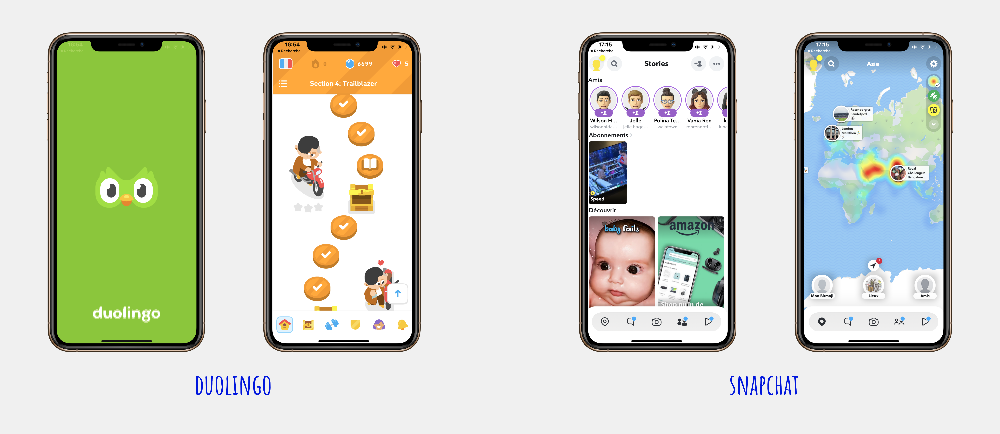
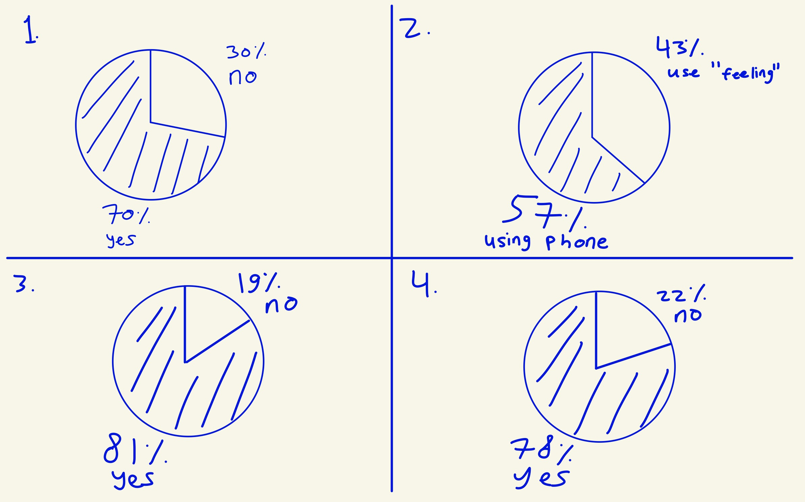
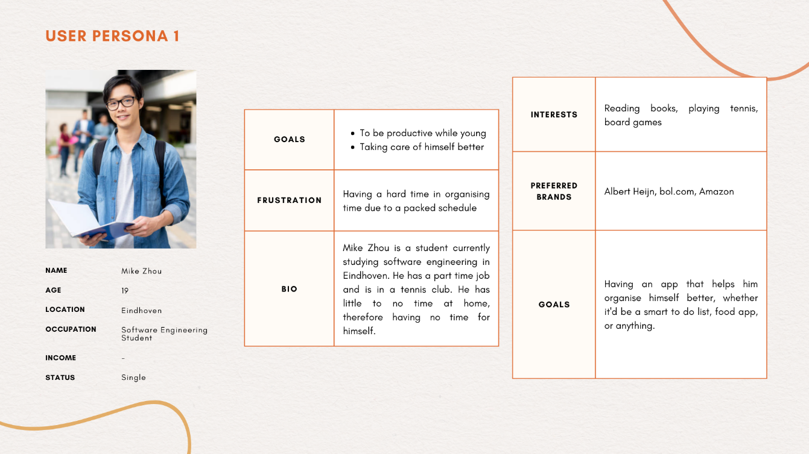
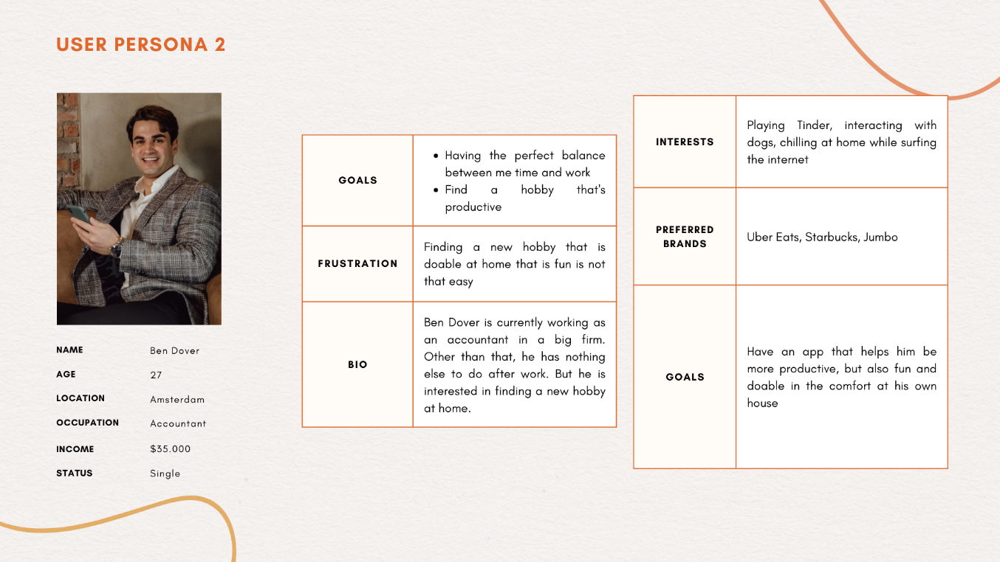
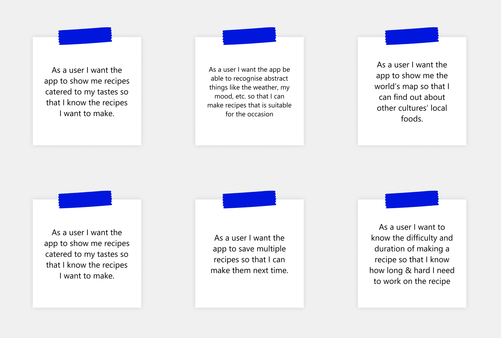
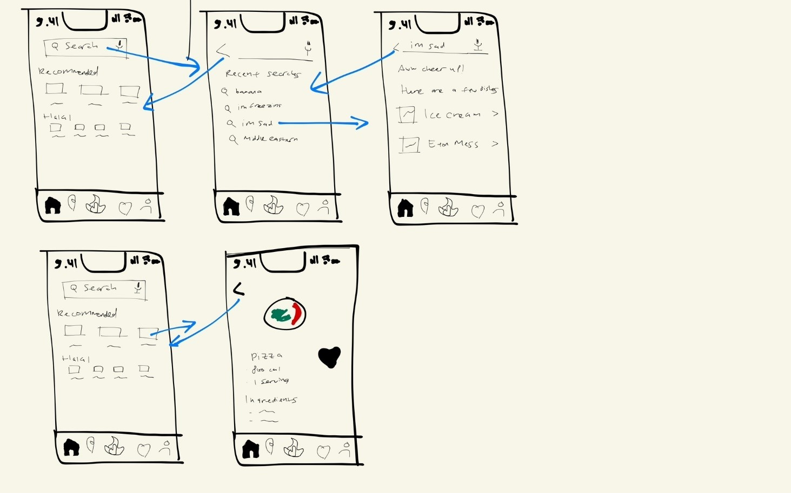
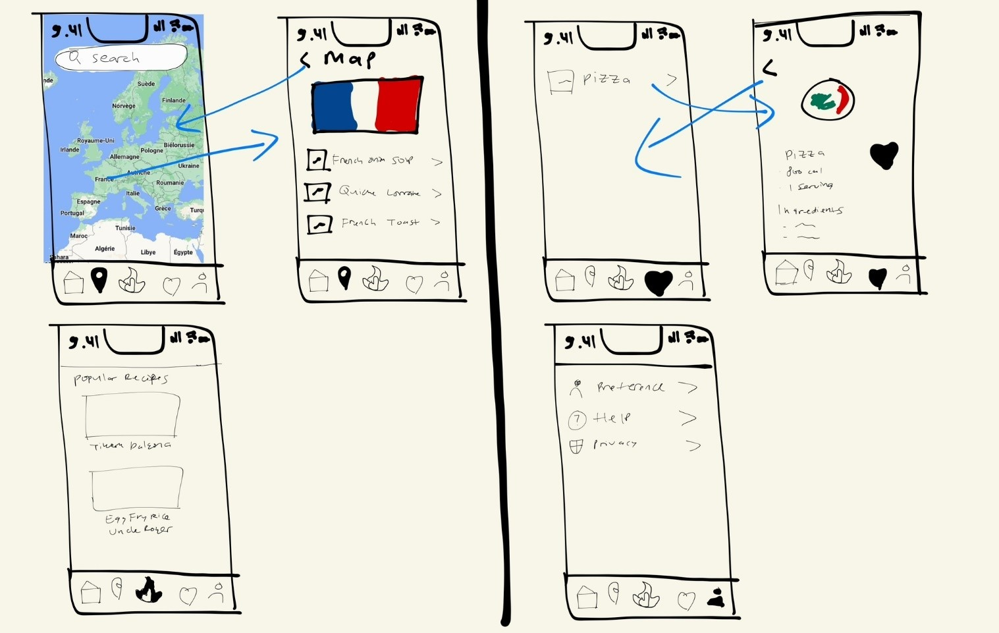

I have always liked cooking and cuisine all around the world since a young age. Growing up in Indonesia, I’ve been privileged to try some of the world’s arguably best foods. My mom used to say that if you cannot travel abroad, eat their food; the taste of their food will take you to their country in the comfort of your own house. This passion and principle have helped me shape the way I am today; how I am going out of my comfort zone and trying something new and foreign (so here I am in the Netherlands).
Like most students abroad, I need to learn how to cook. The problem is, because I can cook basically whatever I want, I sometimes got overwhelmed by the dishes I can make. Therefore, as an IT student, I want to find a way to help people like me to cook and know food properly, while introducing cuisine from all around the world. The best way to realize that is to design a cook/food mobile app, as basically everyone has a smartphone.
Oh and, because I am a proud Gen Z, I want to design an app that appeals to us sarcastic and snarky human beings.
Therefore, my research question would be:
How do I design cooking/food app catered to help my target audience discover food?
I need to first research on my target audience/demographics to know who I should market my product to. I concluded that the people I’m focusing on is not only Gen Z but also Millennials, aged 11-26 and 27-42 respectively. Here are a few reasons why:

When scrolling through popular social media apps like TikTok and Twitter, I found that Gen Z and Millennials tend to be way more relaxed and playful than the other generations. The advertising and content big companies produce today are really different than the typical ads they use in the old days. Just look at some of these examples:

What can I conclude from all these? I concluded that Gen Z and Millennials would be more interested in my app if I include sarcastic and snarky comments.
As my app are catered to Gen Z and Millenials, I need to design the app to look and feel like other apps these people use. I researched two apps that my target audience uses frequently, which are Duolingo and Snapchat.
You will notice that these apps have distinct colours and theme, but also have clean design. It gives off the vibe that these apps are not so serious and more playful.
After doing secondary research on my target audience, I now need to do primary research by directly interviewing Gen Z and Millennials.
Here are the list of questions I asked to my target audience.
Do you have a hard time finding foods catered to you?
Do you use your phone to browse for recipes or just use your own imagination?
Do you want to discover foods that you’ve never heard of before?
Do you want to know how to make popular & trending foods on the internet properly?
After interviewing them, I drew pie charts to illustrate my findings.
In conclusion, the response I got postively affirmed that this project has potential, and that my target audience would love my idea.
Even though the concept app I'm going for doesn't have a direct competitor, it does share a few similarities with some apps like Albert Heijn and HelloFresh.

Albert Heijn is the largest supermarket chain in the Netherlands with a market share of 34.8% in 2020. Their app sells groceries there. But to make them more appealing, they also have a cook section in their app that has recipes using the ingredients they sell. They usually update their recipes based on trends (like Kings Day in the Netherlands).
Another company I analysed is Hello Fresh, a meal kit company that sends ingredients and the according recipe to your house for you to cook them yourself. They are the largest meal-kit provider in the United States, and also has operations in Australia, Canada, New Zealand and Europe.
The reason why I chose to analyse these two apps is because they are widely used by everyone including my target audience. They also cater ingredients and recipes to their user.
However, Albert Heijn can't really cater to your needs if you have specific diets. Also, they tend to substitute original ingredients with the ingredients they sell (you're supposed to use Pecorino for Carbonara, but they tell users to use Parmesan instead because they don't sell Pecorino).
In the case of Hello Fresh, while they do have preferences you can set to personalise your foods, they don’t exclusively have gluten- or allergen-free meal options. Also, your preferences can only go so far, as there are only preferences like “mostly meat, veggie, family, quick cook, calorie smart, and pescatarian”. They don’t have really specific diets like keto, halal if you’re Muslim, etc.
In conclusion, I find a niche that none of the big competitors have, as my app is dedicated to finding recipes that you’d like, trending recipes from sources like YouTube(rs), TikTok, famous people, etc, and a world map that lets you freely search for recipes based on a country. I also found that there’s not really a super app like mine in the App store, which is great because I have little to no competition, but because this is a really new thing, this might not work in the existing market.
After knowing the stereotypical people who would love to use my app, I made two personas, one for a student, and one for a fresh graduate who just started working.
 I created user stories based on the persona, interview, and other research I conducted above. Here are some of the user stories:
I decided to draw some low fidelity prototype / sketches to help illustrate what the app is going to look like. Only the layouts, no fancy decorations. I made the flow and layout according to the feedback I got from my colleagues, as well as the apps I researched before.
 Using my wireframes, I realized my low fidelity designs into a high fidelity prototype using Figma. This is the final version of the food app I created, Sacred Blue.
The reason why I chose the name Sacred Blue is because the name comes from the French phrase sacre bleu!, an expression as a cry of surprise; basically the French version of Oh My Word!, which is sort of the vibe I’m looking for (not too serious and humorous). I picked this French phrase because France is closely related to the world of culinary & cooking as well.
As a side note, I also included the initialisation / account creation in the prototype, to demonstrate that the app really caters to the user.
To get feedback and opinions from my target audience, I decided to conduct a usability testing. I conducted a total of 5 usability testing, asking the users to do the tasks I listed in my user stories. Here are the summary of the results:
100% completion rate, users said they had no trouble adjusting & familiarising themselves with the app.
Gen Z and Millennials love my humour and sarcasm in the app
However, some people wants to know the exact nutritional values of the recipes.
They all said that they would use this app in their day to day life, as it's entertaining but also helpful to them.
With the creation of my app, there are a few impacts to the user:
They can now discover foods that they don't know existed before from all around the world.
They can search recipes using arbitrary keywords, like words describing the weather, their mood, etc.
They can organise their recipes and plan their meals better thanks to the cookbook app.
They can now discover trending foods that people are raving about on the internet
In conclusion, I can say that in this project, I have answered my research question. My target audience really loves the app I created that really catered to them, and they can discover more foods better.